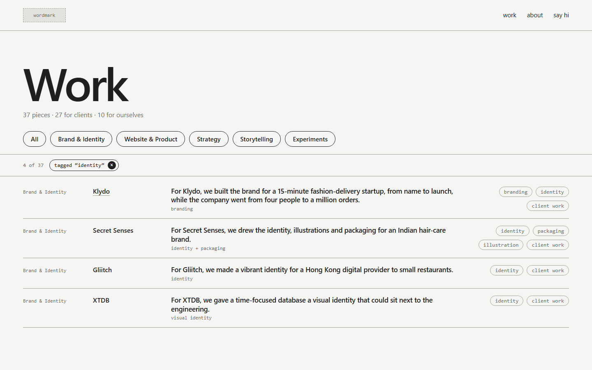
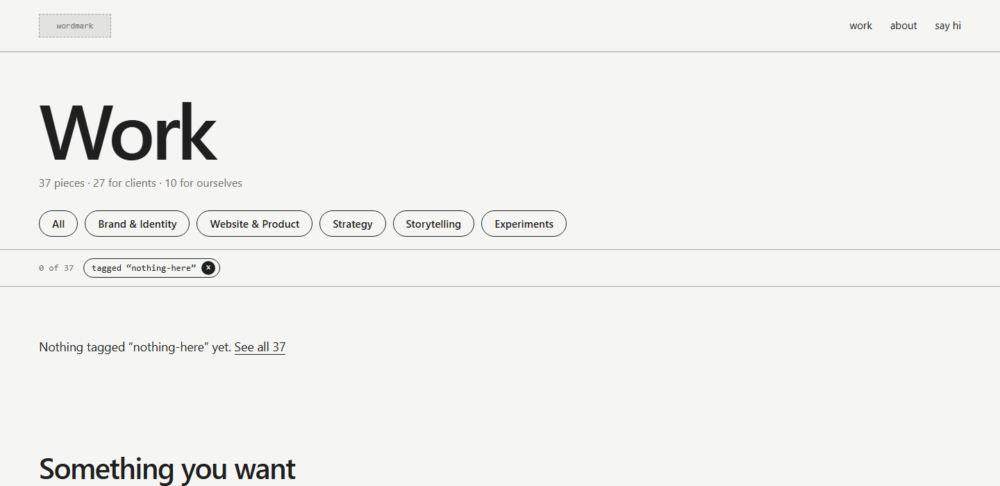

Study 07 · 1 October 2026
The work index
All 37 pieces on one page. Pills and tags filter it.


Pick: B.
Found on the way
.rows lialso styled each tag's<li>: lines ran through the sentences. Scoped to.rows > li.- My check read code inside
render()as links. It now runsrender()instead. - "client work" is on 27 of 37 rows.
Test: check.cjs, every pill and all 37 tags filter correctly; both renders run.